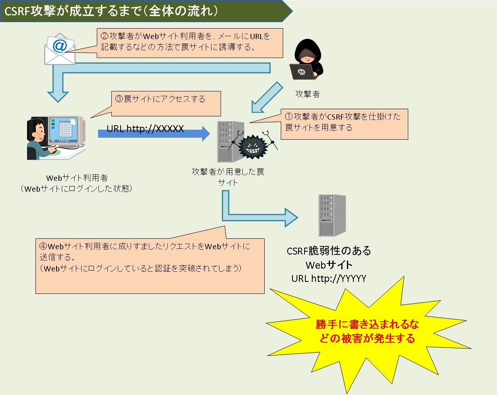
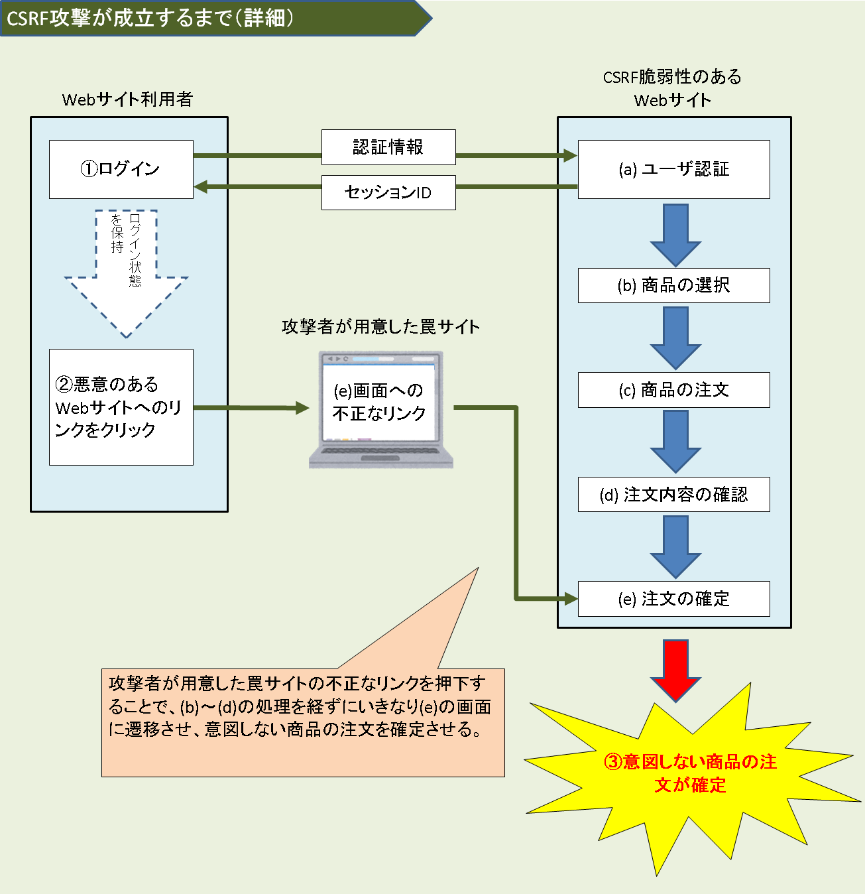

とあるＩＴエンジニアの知識整理
情報処理試験のセキュリティスペシャリスト（現：情報処理安全確保支援士）の平成28年春 午後Ⅰ問1でも出題されています。
この攻撃を受けると、身に覚えのないコメントを投稿されたり、非公開に設定していた情報を公開に変更されるなどの被害を受ける可能性があります。
CSRF攻撃が成立するまでの流れは以下の図のようになっています。

Forgeriesは"偽造"という意味です。つまり「クロスサイトリクエストフォージェリ」を日本語に訳すと「サイトを跨いだ偽造リクエスト」です。
上記の図では、罠サイトからSNSなどのWebサイトへサイトを跨いでおり、偽造されたリクエストが送信されています。
本来であれば(a) ユーザ認証→(b) 商品の選択→(c) 商品の注文→(d) 注文内容の確認→(e) 注文の確定という画面遷移を経て商品を購入するWebサイトを想定します。
このサイトのWebアプリケーションにCSRFの脆弱性があった場合、当該サイトの利用者が、ログイン状態を保持したまま外部のWebサイトに置かれた(e)の画面への不正なリンクを押下することにより、意図しない商品を注文させられてしまう可能性があります。
下図の例の他、CSRFにより、パスワードを強制的に変更させられる、会員制サービスから強制的に退会させられる、ブログや掲示板に意図しないメッセージを書き込まされる、等の問題が発生する可能性があります。

問題は、利用者が意図したリクエストかどうかをWebサイトが識別できていないことです。（参考書籍1 P113）
- サイトを公開している人
・CSRF脆弱性に利用されやすい機能を停止する
CSRF脆弱性の危険があるのは掲示板やコメントフォームなど、「閲覧者が情報を書き込める機能」です。
その機能が必須でない場合は、一時的にその機能を無効にしてしまうことで、被害を未然に防げます。
・コメント承認機能などがある場合はそれを有効にする
また、コメントや意見を書き込む機能には、その情報をWebサイトに表示する前に管理者が確認する機能がついている場合もあります。
そのような機能がある場合は、承認機能を有効にし、未承認の書き込みについてはWebサイトに反映させないようにしましょう。
・プログラムの改修
1. CSRF攻撃は、Cookieだけでセッションを維持している場合に発生する脆弱性を突いた攻撃です。
CookieはWebブラウザが自動で送信するため、Cookieに補完されたパラメタを確認するだけでは不十分です。
Cookieのパラメタが正しくても、利用者の意図したリクエストではない可能性があります。
対策としては、Cookie以外の情報を使って、利用者の意図したリクエストであることを確認する必要があります。
具体的には、利用者の要求（コメントの登録や利用者の登録情報の修正など）を確定する画面（確認画面）に遷移する前の画面（注文確定前の確認画面（画面(d)））に、
第三者が推測困難なランダムな値（トークン）を、hiddenフィールドの値として埋め込みます。
なお、Referrerログから秘密情報が漏えいしないように、この一連の処理にはPOSTメソッドを使用する必要があります。
セッションID等の秘密情報を埋め込む場合もあります。
そして、画面遷移後に受信したデータが、埋め込んだデータと一致するかを確認します。
一致しない場合は不正な画面遷移が発生したとして処理を中止します。（参考書籍1 P123、参考書籍2 P205）
2. 確定処理の直前で再度パスワードを入力させる。（参考書籍2 P205）
(d)の画面で利用者に再度パスワードの入力を求め、(e)では入力されたパスワードが正しい場合のみ処理を実行するようにする。
これにより、パスワード入力のない注文確定リクエストを排除することが可能となる。
なお、この対策は上記に比べて実装が容易である反面、利用者の負担を増やすことになるという問題がある。
3. Referrerを用いてリンク元の正当性を確認する。（参考書籍2 P205）
(e)のリクエストのReferrer情報を確認することで、不正なサイトから送られてきたリクエストを排除することが可能になる。
ただし、クライアントの設定などでReferrer情報を送付しないようにしている場合には、正当なリクエストであっても排除されてしまうことになる。
4. 重要な操作を行った後で、その内容を登録アドレスにメール送信する。（参考書籍2 P205）
CSRFの被害を防ぐことにはならないが、攻撃があった事実を利用者に気づかせることができる。
ただし、メールの本文に重要な情報を入れないようにする等の注意が必要である。
- サイトにアクセスする人
同一生成元ポリシー(Same-Origin Policy)
Cross-Site Request Forgery（クロスサイトリクエストフォジェリー）って何？
クロスサイト・リクエストフォージェリ(CSRF)攻撃とは何かを解説
3. CSRF (クロスサイト・リクエスト・フォージェリ)
CSRF（クロスサイトリクエストフォージェリ）の意味とその対策
※上記1.の2018年度版はこちら（絶対わかる情報処理安全確保支援士 2018年春版）

2. 情報処理教科書 情報セキュリティスペシャリスト 2016年版
※上記2.の2019年度版はこちら（情報処理教科書 情報処理安全確保支援士 2019年版）